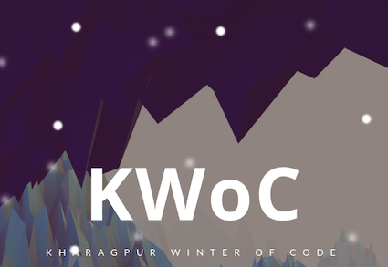
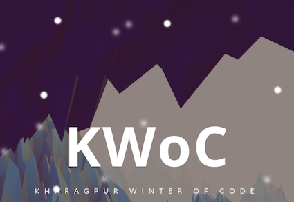
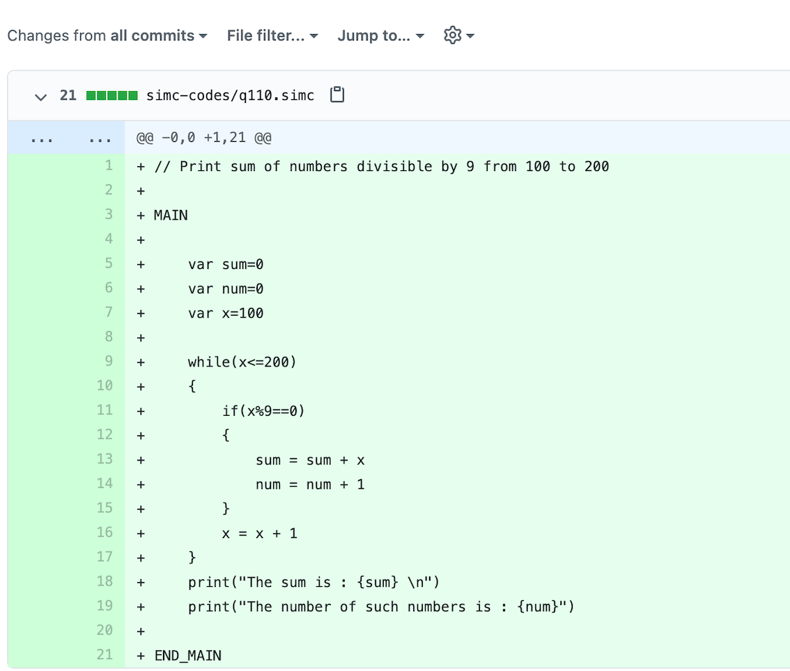
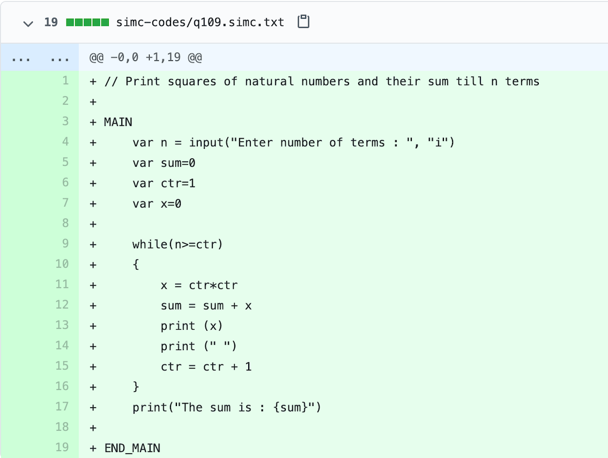

KWOC Project Report
I'm Agnibha
Student at IIT Kharagpur
Student at IIT Kharagpur
My name is AGNIBHA SINHA.I am a first year undergrad student at IIT Kharagpur, Electronics and Electrical Communication Engineering (EC)
KWOC — Kharagpur Winter of Code is a 5-week long online program organised by KOSS for the students of various colleges, who are new to open source software development.
I have added code to the sim-C project solving problems such as printing the numbers divisible by 9,printing squares of natural numbers and their sum till n terms etc to check whether everything is working fine or not
Often people have trouble programming in C (especially beginners) due to its low level syntax and unavailability of stable third party libraries. We present sim-C a high-level front end for C which creates a dynamically typed syntax for C. User can write code in this high level syntax and then compile it to optimized C code. sim-C does not process the code and simply translates it to C thus, there is no possibility of the code running slowly. So, with sim-C users can write code faster using the high level syntax and at the same time be able to harness the power and speed of a C program. Let us make C cool again.
I had made a total of 10 commits and had added 245 lines of code.
This is a simple program in simc language to print the sum of numbers divisible by 9 between 100 to 200. This program verifies that the constructs of the while loop, conditional if statement, print statements and arithmetic operator like % work properly.
This is another simple program in simc language to print the sum of squares of natural numbers till n terms. This program verifies that the syntax for taking input from the user in simc language is correctly implemented. This also confirms the correct implementation of the while loop.
I learnt the use of git and git-hub as this was my first-time experience in the world of open source contributions and got a fair bit of idea on how to contribute to projects. I also learnt the mannerism of communicating with mentors and all the people associated. Looking forward to contributing more to various projects in the future.